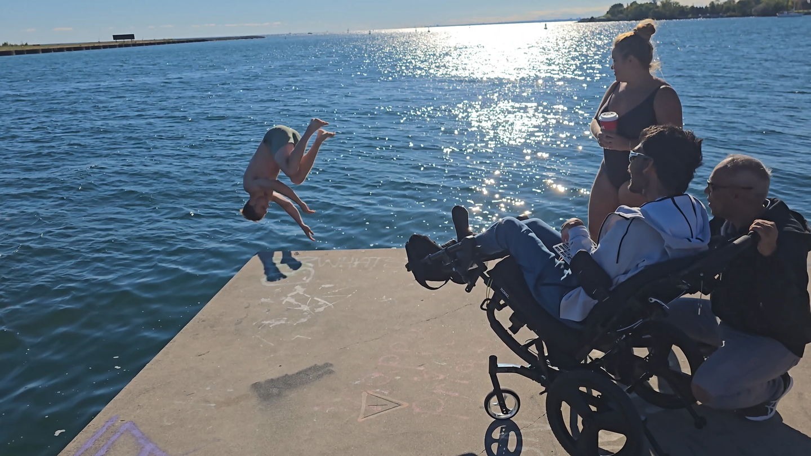
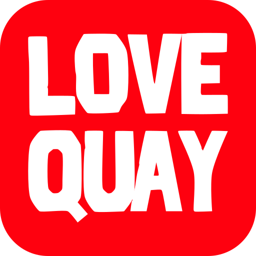

The LoveQuay Republic · work in progress
It is prohibited to prohibit swimming.
One article. No borders, no fee, no membership, no gate. If you are in the water, you are already a citizen.
This page is not linked from anywhere
It sits at /republic.html and nothing in the navigation
points at it. It carries a noindex tag, so search engines will leave it
alone until that line comes out of the page head.
Article one · and only
It is prohibited to prohibit swimming.
Anywhere. Not here especially — anywhere. A shoreline that can be walked to should be a shoreline that can be swum from.
No one may be kept out of the water for being the wrong sort of person, in the wrong sort of body, on the wrong sort of income, at the wrong hour of the year. Fences, permits, membership rolls and seasons are the things this Republic refuses. Prohibition is the only thing prohibited.
The phrasing is borrowed, knowingly, from a wall in Paris in May 1968: il est interdit d'interdire.
As things actually stand
Nobody has prohibited it here.
Article one is what the Republic asks for. This is the part that is already true: swimming at LoveQuay is not prohibited.
There is no fence, no gate, no bylaw posted at the pier and no notice telling anyone to stay out of the water. There never has been.
The one sign is a City of Toronto sign, and it reads:
Danger — Use at Own Risk. Walkway Not Owned or Maintained by The City of Toronto.
Read it closely. It is about the walkway, and it is a disclaimer of responsibility rather than an instruction. The City is saying it does not look after this place and will not be answerable for what happens on it. That is not the same thing as saying you may not swim, and it has never been written as though it were.
Nobody is responsible for you here is the message. You are not allowed is not. People have swum off the west end for years.
Read this part twice
A right to swim is not a promise of safety.
The Republic can prohibit a fence. It cannot prohibit cold water, sudden depth, boat traffic, submerged steel, or the gap between what you can do and what you think you can do.
- Nobody is watching. There are no lifeguards here, no inspections, no owner, and no one coming. That does not change because a page calls it a republic.
- Never swim alone. The single most useful rule on this whole site, and it outranks everything written here.
- In winter, the water wins arguments. Ice has nearly the same refractive index as water, so a chunk of it is very hard to see until you are against it.
- Know your limit and stay within it. Refusing other people's prohibitions is not the same as refusing your own judgement.
Why article one exists
Shutting people out of the water is a rights question.
Not a parks-management question. That is the whole reason the first rule of this Republic is written the way it is.
Water and sanitation are not amenities. The UN General Assembly recognised access to both as a human right in resolution 64/292, adopted in July 2010.
For disabled people the obligation is more specific still. Canada ratified the Convention on the Rights of Persons with Disabilities in March 2010, and article 28 commits every state that signs it to “ensure equal access by persons with disabilities to clean water services”.
So the test is not whether a city says people may swim. It is whether the water can actually be reached. When the only route to the edge crosses soft sand, when matting laid down for wheelchairs stops short of the waterline, when the ladders and ramps that let someone climb back out are taken away, or when a gate too narrow for a mobility device is put across the one path in — the water has been made reachable for some people and not others. That is what a denial of access on the basis of disability looks like in practice, whatever the intention behind it was.
Toronto’s version of this has been documented at length, with dates, photographs and the City’s own replies, by Steve Mann — who turns up three more times further down this page: the full account at wearcam.org.
The next thing we need
A city with nowhere to go is a city you cannot stay in.
Toronto’s shortage of public toilets is long-standing and well documented. At the pier there are none at all.
This is the other half of the same right, and the half nobody argues about: there is no point winning access to the water if you cannot stay beside it.
Campaigners have been making this case to the City for years — the Toronto Public Space Committee’s Gotta Go TO campaign has argued since 2021 that public washrooms are basic civic infrastructure rather than a luxury. The people it affects most are the people least able to work around it: disabled people, older people, pregnant people, children, anyone with a medical condition, and anyone with nowhere else to go. A waterfront without a toilet is not neutral. It quietly selects who can spend the day there.
So rather than wait, we want to put sanitation on the quay ourselves. The first step is a serviced portable unit — Supersave is the supplier we are pricing — kept clean and emptied on a regular schedule.
What it costs
- About $600 to begin. Delivery and setting the first unit in place.
- About $360 a month after that. Rental and regular servicing, which is the part that decides whether it stays usable.
Early figures rather than a signed quote, and an accessible unit is the point of the exercise, so the final number will not be exactly these. They are published because a number you can check is more use than a plea.
There is no way to donate on this site yet, and nothing here collects money. If you can help fund it, supply it, or site it, say so and we will work out the rest.
Everything else
Not laws. Just how it already works.
Article one is the only rule. What follows is a description of what people here do anyway, written down so it is harder to forget.
Water is a relation, not a resource
It is not a commodity, and access to clean water is not a privilege handed down. Every body of water is connected to every body of life, including yours.
The shore belongs to whoever keeps it clean
Nobody owns LoveQuay and nobody maintains it. That is not a complaint — it is the job description. One bag, one visit.
No fee at the water
No gate, no season ticket, no one to ask, and nothing to show anyone. If you had to pay to get in the lake, it would be somewhere else. There is a card you can buy, and it buys you nothing here.
Belonging is getting wet
No papers, no oath, no ceremony. Swim here and you are one of us; stop swimming and you still are. There is a numbered card for people who want to fund the work, but it is a receipt, not a right — and nobody will ever ask you for one.
What you bring, you take home
And a little more than you brought, when you can manage it. The pier is only as good as the last person's pockets.
No hierarchy to join
There is no office, no committee and no founder with a casting vote. Anyone claiming authority over this water has misunderstood the only article.
Mersivity
Being with water, not just in it.
From mer, the sea, and versivity, a turning toward. Mersivity is the practice of turning toward water with attention.
It treats water as a living relation and a shared commons — something you take part in rather than something you operate. To practise it is to listen before diverting, protect before extracting, and act knowing that all water returns.
The term comes from Steve Mann again — the same engineer whose account of Toronto's water barriers is linked above.
A daily practice, if you want one
Once a day, pause before you use water — drinking it, washing in it, pouring it on a plant — and follow its path. Cloud to river, reservoir to pipe, pipe to skin, and back out again.
That pause is attention. That attention is the practice. It needs no device, no fee and no institution.
Four things it rests on
- Water connects every living system.
- Access to clean water is a fundamental right.
- Human action has to respect water's continuity.
- What is taken from the earth is returned with care.
Official instrument
The hydraulophone.
A pipe with a row of small fountains along it. Each fountain is a note.
You play it the way you would play a flute, by covering holes — except that what comes out of these holes is water. A jet running freely makes no sound at all. Put a finger over it and the water is pushed back into the instrument, through a mechanism tuned to that jet's note.
Press harder and it swells. Ease off and it fades. Cover half a jet and you get half a note, and every note in a chord can be shaped on its own.
Why this one
Because the sound starts in the water itself — not in a string, a skin, a wooden body or a column of air. A republic whose only law is about getting into water has no business picking an instrument that merely gets rained on.
And because they are built to get wet, hydraulophones end up in splash pads, water parks and public plazas, where anyone walking past can play one. No ticket, no booking, no one to ask. That is article one, in an instrument.
Where it comes from
Invented by Steve Mann, the Canadian engineer who also coined mersivity and co-wrote the anthem on this page.
The name nods to the hydraulis, the water organ of ancient Greece — though that one only used water to hold its air pressure steady, and still made its sound with air. This one really is played on water.
Anthem
Come Swim With Me at LoveQuay
The Republic has an anthem before it has a flag, a border or a post office. By Steve Mann, Perry Toone and Rhyzome Adkisson, finished 20 November 2026.

For the avoidance of doubt
The water is not for sale.
The LoveQuay Republic is not a country, a charity or a club, and it makes no claim of sovereignty over any water, any land, or anybody.
It is a way of saying something plain: that a shoreline the public can reach should be a shoreline the public can swim from, and that the people who use a place and keep it clean have the best claim to describe how it works.
You can buy a citizen card if you want an @lovequay.com address and want to pay for the bin bags. That is the only thing sold in the name of this Republic, it is optional, and it confers no advantage at the water whatsoever. If anyone asks you for money for anything else here — access, permission, a place to swim — they are not from here.
Being a Friend of Love Quay costs nothing and always will.